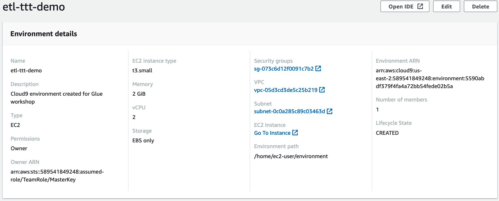

PREPARING THE CLOUD9 ENVIROMENT
We will use AWS Cloud9 to run shell commands, edit and run Python scripts for the labs. Cloud9 is a cloud-based integrated development environment (IDE) that lets you write, run, and debug your code with just a browser. It combines the rich code editing features of an IDE such as code completion, hinting, and step-through debugging, with access to a full Linux server for running and storing code.
Go to the AWS Cloud9 Console in your environment and you should see a Cloud9 Environment named etl-ttt-demo. Select this enviroment and click on the View detailsIn th button.
In the details page, under EC2 Instance, click on Go To Instance link. This will open a new tab on your browser and take you to the AWS EC2 Console. TIP: Leave the AWS Cloud9 Console tab open for now!

In the AWS EC2 Console, select the Cloud9 EC2 Instance that starts with aws-cloud9-. Click on the Actions dropdown button, followed by Security, then click on Modify IAM Role.

In the next screen's dropdown box select the role that contains -AWSEC2InstanceProfileTTT- and click Save. TIP: You can close the AWS EC2 Console tab now!

Go back to the AWS Cloud9 Console tab and, while still on the Enviroment Details page, click on the Open IDE button to launch your AWS Cloud9 IDE environment tab. Tip: Now, you can close the AWS Cloud9 Console tab.
Allow for the launched AWS Cloud9 Enviroment's setup to finish, then close the Welcome tab and click on the green plus icon (+) to add a New Terminal tab. This will create a new terminal tab and load a command-line terminal.

From now on, you will use this terminal window throughout this workshop lab to execute all the AWS CLI commands and scripts. TIP: Keep this tab open for the entire workshop if you can!
1. Setting up Cloud9 Environment Variables¶
During the workshop environment setup, a S3 Bucket is created for storing the Lab Paths, Lab Files and CloudTrail Logs. A RDS MySQL Instance also got created for you.
Run the following set of commands to setup and print out the required Enviroment Variables such as the \${BUCKET_NAME} for your S3 Bucket and \$mysqlendpoint for the RDS MySQL Instance endpoint:
AWS_ACCOUNT_ID=`aws sts get-caller-identity --query Account --output text`
AWS_REGION=`aws configure get region`
BUCKET_NAME=etl-ttt-demo-${AWS_ACCOUNT_ID}-${AWS_REGION}
mysqlendpoint=$(aws cloudformation describe-stacks --query 'Stacks[*].Outputs[?OutputKey==`MySQLEndpoint`].OutputValue | [0] | [0]' --output text)
echo "export BUCKET_NAME=\"${BUCKET_NAME}\"" >> /home/ec2-user/.bashrc
echo "export AWS_REGION=\"${AWS_REGION}\"" >> /home/ec2-user/.bashrc
echo "export AWS_ACCOUNT_ID=\"${AWS_ACCOUNT_ID}\"" >> /home/ec2-user/.bashrc
echo ${BUCKET_NAME}
echo ${AWS_REGION}
echo ${AWS_ACCOUNT_ID}
echo $mysqlendpoint
Note: You can save the output values elsewhere for easy reference if you want or always re-run the echo commands to print them out again.
2. Switching Cloud9 Role Credentials¶
After running the first set of commands, you need to disable the auto management of AWS Temporary Credentials which is controlled by Cloud9 by default. In your Cloud9 Enviroment click on the Preferences (Gear Icon on the far upper right), the Preferences tab will open. There, scroll to AWS Settings and disable the option AWS managed temporary credentials.
Once done, close the Preferences tab and in your Cloud9 terminal tab run the following commands to validate that Cloud9 is now using the AWSEC2ServiceRole-etl-ttt-demo role which belongs to the AWSEC2InstanceProfileTTT you setup earlier in for the Cloud9 EC2 instance.
aws configure set region $AWS_REGION
aws sts get-caller-identity --query Arn | grep AWSEC2ServiceRole-etl-ttt-demo -q && echo "IAM role valid" || echo "IAM role NOT valid"
You should see your current region and a message "IAM role valid" in the output.
3. Setting up Security Required Groups Inbound Rules¶
Next, a new Inbound Rule will be added to the Default Security Group of this workshop which is tagged with the name etl-ttt-demo. This new Inboud Rule is to allow traffic from the AWS Cloud9 Instance's Security Group to the resources in the etl-ttt-demo's Security Group. Run the following commands to do that:
ref_sg=$(aws ec2 describe-security-groups --query 'SecurityGroups[?contains(GroupName, `aws-cloud9-etl-ttt-demo`) == `true`].GroupId' --output text)
target_sg=$(aws ec2 describe-security-groups --query 'SecurityGroups[?contains(GroupName, `DefaultVPCSecurityGroup`) == `true`].GroupId' --output text)
aws ec2 authorize-security-group-ingress --group-id $target_sg --protocol -1 --source-group $ref_sg
echo "Source SG:" $ref_sg "has been added to Target SG:" $target_sg
You should see a message " Source SG: sg-XXXXX has been added to Target SG: sg-XXXXX " where XXXXX is the ID of each Security Group, the EC2's and the DefaultVPC's Security Group.
[Optional]: You can go to your AWS VPC Console to verify that a new Inbound Rule has been added to the etl-ttt-demo, it should have two Inbound Rules now.
4. Installing Required Libraries (Boto3)¶
In this next step, BOTO3 Library will be installed to your Cloud9 enviroment. That step is required in order to support running the Kinesis Streaming Python script during the Part 4 - Orchestration & Data Analysis - of this workshop. Run the following command to do so:
sudo pip3 install boto3
Wait untill you see a message that says: "Successfully installed boto3-1.22.9 botocore-1.25.9 s3transfer-0.5.2"
You are finished with the initial setup of the workshop environment. Take some time the explore the commands you ran here and to check the resources (such as the Amazon S3 workshop's bucket: etl-ttt-demo-\${AWS_ACCOUNT_ID}-\${AWS_REGION} - that have been created for you as part of the CloudFormation Template execution. Once you are ready you can move on to Part 1 - Working with TPC-DS Data & RDS MySQL Database!